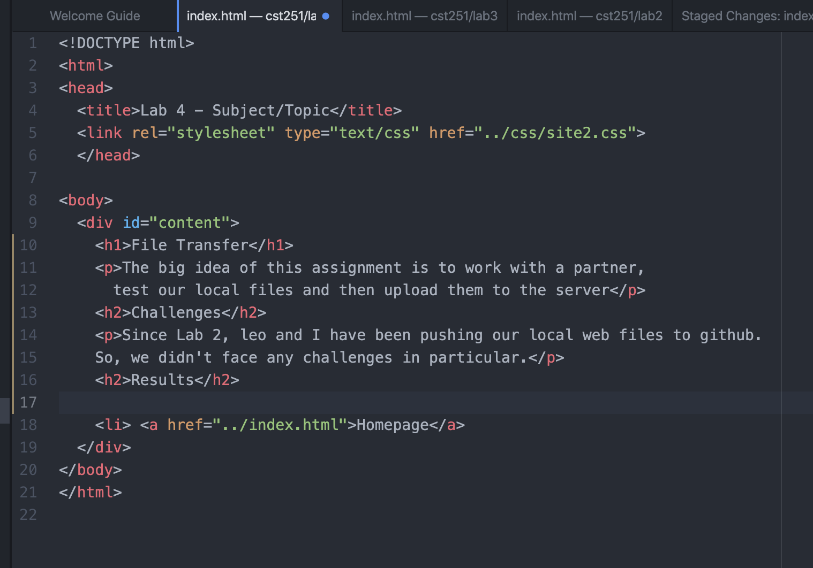
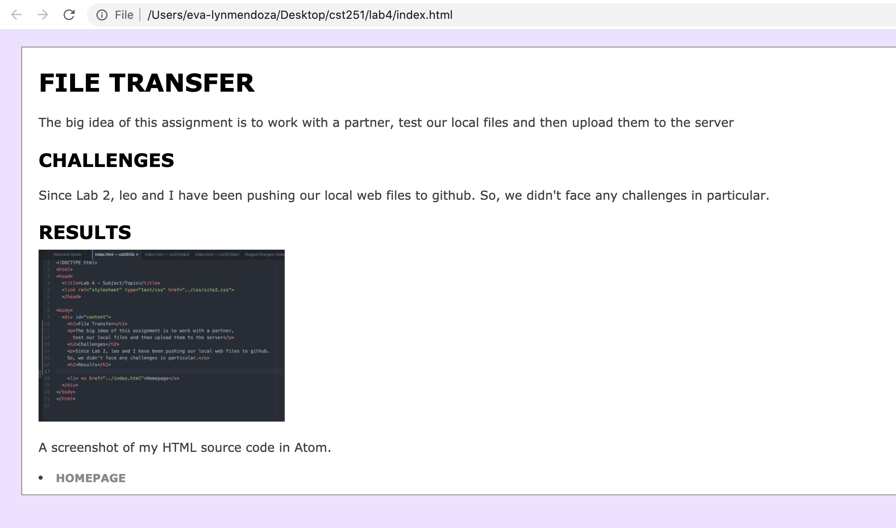
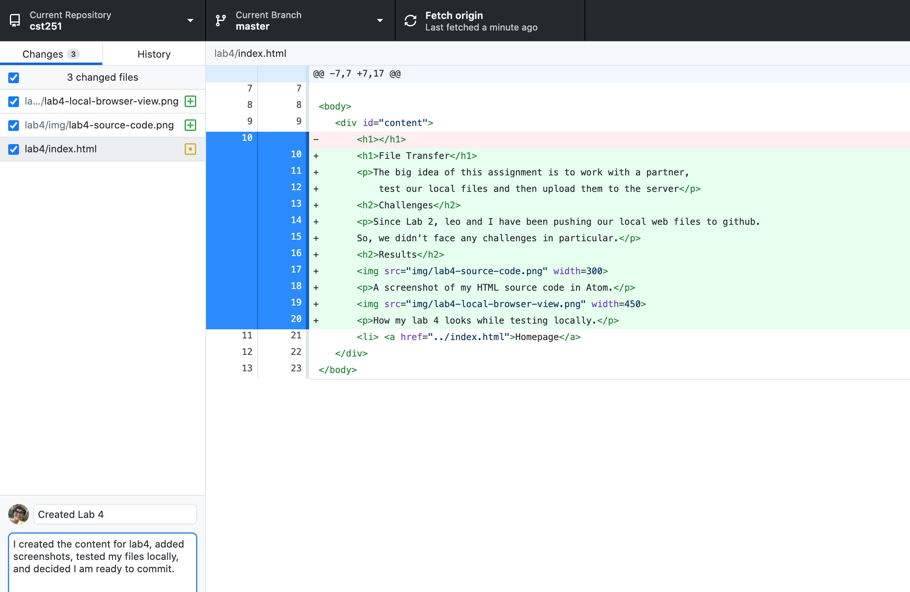
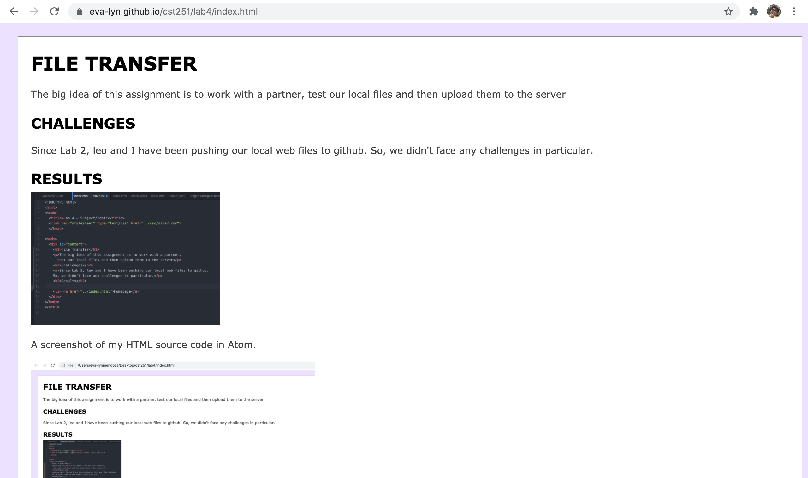

File Transfer
The big idea of this assignment is to work with a partner, test our local files and then upload them to the server
Challenges
Since Lab 2, leo and I have been pushing our local web files to github. So, we didn't face any challenges in particular.
Results
A screenshot of my HTML source code in Atom.
How my Lab 4 page looks while testing locally.
A screenshot of how my local file changes appear in Github before I commit to master.
How my Lab 4 page looks while wiewing on the web.